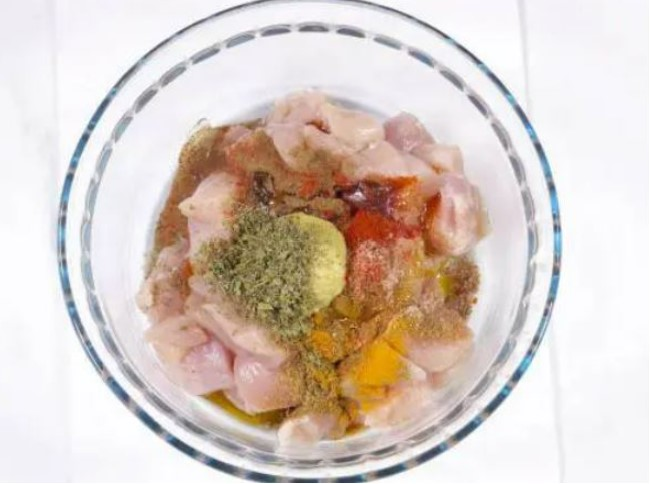
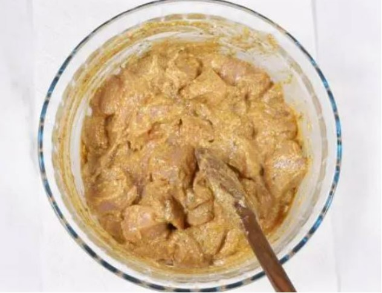

Homemade Chicken Tikka Masala Recipe
Origin: India
Source: Tasty.co
Category: Main Dish

Chicken Tikka Masala is a delicious dish to have for dinner. It has a nice mixture of savory and sweet flavors and is best served with Naan and rice and vegetables.
Recipe Ingredients
CHICKEN MARINADE
- 3 boneless, skinless chicken breasts
- ½ cup plain yogurt
- 2 tablespoons lemon juice
- 6 cloves garlic, minced
- 1 tablespoon minced ginger
- 2 teaspoons salt
- 2 teaspoons ground cumin
- 2 teaspoons garam masala
- 2 teaspoons paprika
SAUCE
- 3 tablespoons oil
- 1 large onion, finely chopped
- 2 tablespoons minced ginger
- 8 cloves garlic, minced
- 2 teaspoons ground cumin
- 2 teaspoons ground turmeric
- 2 teaspoons ground coriander
- 2 teaspoons paprika
- 2 teaspoons chili powder
- 2 teaspoons garam masala
- 1 tablespoon tomato puree
- 3 ½ cups tomato sauce
- 1 ¼ cups water
- 1 cup heavy cream
- ¼ cup fresh cilantro, for garnish
- cooked rice, for serving
- naan bread, for serving
Recipe Steps
- Slice the chicken into bite-sized chunks. Combine the cubed chicken with the yogurt, lemon juice, garlic, ginger, salt, cumin, garam masala, and paprika and stir until well-coated.
- Cover and refrigerate for at least 1 hour, or overnight.
- Preheat the oven to 500°F (260°C). Line a high-sided baking pan or roasting tray with parchment paper.
- Place the marinated chicken pieces on bamboo or wooden skewers, then set them over the prepared baking pan, making sure there is space underneath the chicken to help distribute the heat more evenly. Bake for about 15 minutes, until slightly dark brown on the edges.
- Make the sauce: Heat the oil in a large pot over medium heat, then sauté the onions, ginger, and garlic until tender but not browned. Add the cumin, turmeric, coriander, paprika, chili powder, and garam masala and stir constantly for about 30 seconds, until the spices are fragrant. Stir in the tomato puree, tomato sauce, and 1 ¼ cups of water, then bring to a boil and cook for about 5 minutes. Pour in the cream.
- Remove the chicken from the skewers and add to the sauce, cooking for another 1-2 minutes. Garnish with cilantro and serve over rice or alongside naan bread.
Enjoy!
Additional Food Images
Raw chicken with many spices on it.
Spices mixed together with the chicken.

An image of pouring boiling water into the sauce.
Rachel Sondergeld
Peanut Butter and Jelly Sandwich
Origin: American
Source: Alex Likens
Category: Main Dish

This is a dish that is great at all times of the year. Its mix of savory flavors with sweet jelly makes it a favorite dish for many people. This dish is great for any situation, whether you are on the go, in a rush, or just looking for a tasty meal at home.
Recipe Ingredients
- Bread
- Peanut Butter
- Jelly
Recipe Steps
- Take two pieces of bread and place them on a plate.
- Put a thick layer of jelly on one piece of the bread.
- Put a thick layer of peanut butter on the other piece of the bread.
- Put the two pieces of bread together so they face each other.
Additional Food Images

Peanut Butter and Jelly in the process of being made.

PBJ finished product 1.

PBJ finished product 2.
Alexander Likens
Dead Simple Fried Rice
Origin: American/East Asian
Source: Self
Category: Main Dish

This Dead Simple Fried Rice recipe is an incredibly modular and tasty dish. At its core, it's just rice, vegetables, protein, and oil. As such, the dish can be modified to serve as many or as few people as needed with a wide variety of food preferences. Experimentation with what specific ingredients you enjoy the most will unlock the full potential of this dish.
Recipe Ingredients:
- Long-grain white rice
- Frozen Vegetables
- Eggs
- (optional) Milk
- Oil of Choice
- Salt
- Soy Sauce
- (optional) Additional Sauce
- Curry Sauce/Paste, Spicy Teriyaki Sauce, and Sweet Chili Sauce are great options
- (optional) Additional Pre-cooked/Fast-cooking Protein of Choice
- Nuts, sausage, tofu, and bacon are great options
- (optional) Additional Fresh Vegetables
- Green onions, celery, and Vidalia onions add great texture and flavor to the dish.
Recipe Steps:
- In a rice cooker, add half a cup of rice, a cup of water, a touch of oil, and a pinch of salt. Cook the rice. Tip: if there are tough frozen veggies, such as broccoli, you might want to add the frozen veggies to the integrated steamer basket.
- On high medium heat on your stovetop, in a frying pan, add your chosen oil. Add some milk if desired. Then, scramble the eggs.
- Before the eggs are fully done, add the frozen vegetables. Add fresh vegetables when required so they are fully cooked by the end.
- (Optional) Add the additional protein when required so they are fully cooked by the end.
- Once the rice is done, add it to the pan. Pour your desired amount of Soy Sauce. Stir well.
- (Optional) After that, add your desired amount of additional sauce. Stir well.
- Let the fried rice cook until it is no longer visibly oily and the dish is nice and hot, with the vegetables fully cooked.
- Plate the fried rice. Enjoy!
Additional Images

Dead Simple Fried Rice packed for lunch.

Another photo of the Dead Simple Fried Rice in a frying pan.

An additional photo of the Dead Simple Fried Rice in a frying pan.
Tristan Goodell